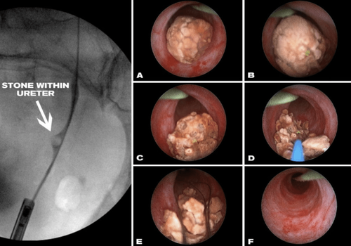

تفتيت حصوات الكلى والحالب بالليزر والمناظير المرنة
Holmium Laser (Ho:YAG) — تقنية المنظار المرن الأكثر أماناً لتفتيت الحصوات وتطهير المسالك دون أي شق جراحي.
مميزات تقنية التفتيت بالليزر
تقنية تحويل الحصوات إلى رذاذ (Dusting)
نعتمد ألياف ليزر هولميوم متقدمة تعمل على سحق وتفتيت أصلب الحصوات الكلسية وحمض اليوريك إلى جزيئات غبارية دقيقة تُطرد بيسر تام وتلقائياً مع البول دون انسداد مجرى الحالب.
مناظير مرنة تصل لأعمق كؤوس الكلى
قدرة المنظار الدقيق على الانحناء بزوايا تصل إلى 270 درجة تسمح باستئصال وتفتيت الحصوات المستقرة داخل الكؤوس السفلية دون أي فتحات أو شقوق جراحية بالجلد نهائياً.
حماية فائقة لأنسجة الكلى وأمان تام
يتميز التفتيت بالليزر بالدقة المتناهية التي تحافظ على سلامة جدار الحالب وبطانة حوض الكلى، مع انعدام احتمالات النزيف مقارنة بالطرق الجراحية القديمة.
من هم المرشحون لهذه التقنية؟
يُعد المنظار المرن مع الليزر المعيار الذهبي الموصى به أوروبياً للحالات التالية:
- check_circle حصوات الحالب مسببة نوبات المغص الكلوي الحاد والمفاجئ
- check_circle حصوات الكلى المتشعبة أو الفردية حتى حجم 2 سم
- check_circle فشل محاولات التفتيت السابقة بالموجات التصادمية الخارجية
- check_circle مرضى سيولة الدم أو الراغبين في عودة فورية للعمل والنشاط
مسار علاج المريض داخل العيادة
-
1
الفحص والتقييم الدقيق
العيادةإجراء أشعة مقطعية حلزونية منخفضة الإشعاع بدون صبغة لتحديد موقع وصلابة وحجم الحصوة بالأبعاد المليمترية.
-
2
جلسة التفتيت بالمنظار والليزر
30-45 دقيقةتتم العملية تحت تخدير نصفي أو عام خفيف جداً، بتوجيه الكاميرا الرقمية عالية الدقة وتطبيق نبضات ليزر الهولميوم لتفتيت الحصوة تماماً.
-
3
التعافي والخروج الآمن
مغادرة العيادةالراحة لمدة ساعتين فقط ثم العودة للمنزل في نفس اليوم مع تناول السوائل واستئناف النشاط البدني الطبيعي خلال 24-48 ساعة.
مقارنة الحلول الطبية لحصوات المسالك
استشارة تفتيت الحصوات مع د. كريم زاهر
تقييم شامل بالأشعة المقطعية منخفضة الإشعاع وتحديد خطة التفتيت الأمثل لحالتك.
زهراء المعادي - الشطر الثالث عشر - برج الندى (الدور الأول).